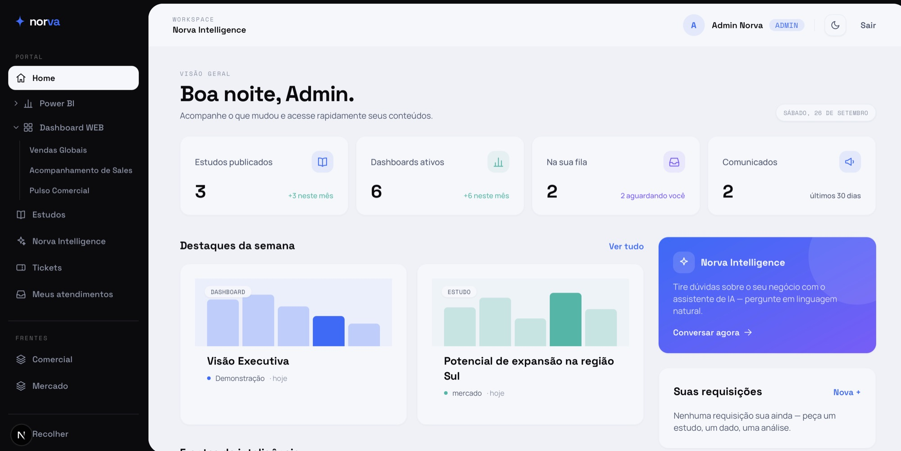

01
Dashboards em Power BI
Painéis prontos para a diretoria que as pessoas realmente usam, com modelos confiáveis, DAX limpo e governança de verdade.
Antes de contratar um time de dados ou comprar outra plataforma, a Norva entra no seu negócio para mapear as decisões, os dados e o próximo passo que mais importam.
Não começamos vendendo uma stack. Primeiro entendemos sua operação, depois recomendamos apenas as ferramentas e a arquitetura que a sua próxima decisão exige.
A resposta pode ser um dashboard, uma automação, uma base de dados ou um plano para o seu futuro time. Recomendamos o que faz sentido — não o que está na moda.
Painéis prontos para a diretoria que as pessoas realmente usam, com modelos confiáveis, DAX limpo e governança de verdade.
Análises, ETL e automações que eliminam o trabalho manual e mantêm os dados fluindo sozinhos.
Histórias visuais que tornam padrões complexos óbvios em segundos.
Pipelines da extração à visualização: ingestão, modelagem e camadas confiáveis que escalam.
Modelos preditivos que transformam histórico em previsão, do protótipo à produção.
Seu negócio não precisa de mais um dashboard genérico. Precisa de clareza sobre quais decisões, dados, pessoas e sistemas devem mudar primeiro.
Entramos na sua rotina e aprendemos a cultura, como as decisões são realmente tomadas hoje.
Mapeamos os stakeholders e ouvimos quem está na operação. As melhores métricas vêm de quem faz o trabalho.
Desenhamos modelos de dados estruturados e confiáveis. Uma única fonte da verdade em que o time confia.
Entregamos dashboards e modelos que vão para produção, e capacitamos seu time para evoluí-los.
A maioria dos projetos de dados falha na adoção, não na entrega. Fomos feitos para fechar essa lacuna — e é exatamente aí que a comparação deve ser feita.
Resultados concretos de projetos reais — nomes de clientes preservados por confidencialidade.
De 6 horas de trabalho manual a 5 minutos automatizados.
Um processo recorrente que consumia uma manhã inteira agora roda sozinho — por meio de pipelines em Python implantados na nuvem, sem supervisão humana.
Planilhas espalhadas por regiões consolidadas em um único modelo governado no Power BI em que o time confia.
Uma conciliação manual que tomava uma manhã inteira agora roda em minutos via pipelines em Python na nuvem.
Dados operacionais unificados em indicadores ao vivo, para que o chão de fábrica e a gestão olhem os mesmos números.
Fontes de campanha desconectadas reunidas para ler o retorno real por canal — não métricas de vaidade.
Cada pipeline que construímos e cada dashboard que entregamos existe por um único motivo: tornar a próxima decisão óbvia.
O produto principal da Norva conecta planilhas, bancos de dados, APIs e ambientes de BI para transformar perguntas de negócio em dashboards web sob medida. Agentes especializados constroem, analisam e mantêm cada experiência viva.
Experiências rápidas, responsivas e feitas para cada decisão — sem ficar preso ao formato de uma ferramenta de BI.
Agentes especializados organizam os dados, montam as visualizações, explicam mudanças e sugerem o próximo passo.
O dashboard evolui com o negócio, dentro de um portal com a sua marca, controle de acesso e integrações com o seu ecossistema.

Sem pressão e sem surpresas. Você vê valor antes de se comprometer — e sempre sabe qual é o próximo passo.
Entendemos seu contexto, objetivos e onde as decisões travam hoje.
Mapeamos dados, stakeholders e as decisões que realmente importam para o negócio.
Um plano claro com escopo, prazo e preço definidos. Sem letras miúdas.
Um primeiro resultado tangível logo no início, para você decidir com evidência — não promessas.
Colocamos em produção com governança, documentação e seu time a bordo.
Ficamos por perto, medimos a adoção e evoluímos a solução conforme você cresce.
Você no controle o tempo todo. Leve o tempo que precisar para comparar e alinhar internamente — andamos no ritmo de uma decisão segura, não apressada.
Um espectro flexível, do projeto completo ao apoio pontual.
Assumimos toda a jornada de dados, da extração à visualização.
Lado a lado com seu time, acelerando entregas e elevando o nível.
Plugamos no time de dados existente para destravar dashboards e automações.
Confiança não é um recurso que adicionamos no fim — é como construímos desde a primeira linha do pipeline.
Dados pessoais tratados de acordo com a LGPD, da coleta ao acesso.
Cada pessoa vê exatamente os dados que deve — e nada além da sua permissão.
Permissões governadas com rastreabilidade — quem acessou o quê, e quando.
Nada fica na cabeça de uma pessoa. Modelos, pipelines e regras documentados.
Dev, homologação e produção separados, para que mudanças nunca toquem dados reais por acidente.
Dados recuperáveis e linhagem clara, para você sempre confiar no que um número significa.
Toda disciplina necessária para ir do dado bruto à decisão, sob o mesmo teto e responsável de ponta a ponta.
Pipelines, arquitetura e as camadas confiáveis sobre as quais tudo se apoia.
Modelos que transformam histórico em previsão, do protótipo à produção.
Dashboards em que as pessoas confiam e que de fato usam — sobre modelos limpos e governados.
Infraestrutura escalável e segura no Azure e no stack de dados moderno.
Clareza por design — transformando complexidade em algo que um líder lê em segundos.
Trabalhamos no seu ecossistema e integramos com o que você já usa.
Desenhamos cada projeto em torno de uma prova de valor inicial, para você ver algo tangível rápido — normalmente nas primeiras semanas — antes de qualquer compromisso maior.
Os dois. Podemos assumir toda a jornada de dados, co-construir com o seu pessoal ou entrar como especialistas para reforçar o time que você já tem.
Governança em primeiro lugar: tratamento alinhado à LGPD, segurança em nível de linha, ambientes isolados, modelos documentados e rastreabilidade total de quem acessou o quê.
Não. Somos agnósticos de ferramenta e integramos com o que você já usa. Recomendamos a tecnologia certa para o seu contexto — não a que está na moda.
Muitas vezes é onde mais agregamos — auditando o que existe, restaurando a confiança no dado e transformando relatórios ignorados em decisões em que se confia.
Após o diagnóstico, apresentamos uma proposta clara com escopo, prazo e preço definidos. Você leva o tempo que precisar para comparar e alinhar internamente — sem pressão.
Atuamos em operações comerciais, financeiras, de marketing e industriais — de times dando o primeiro passo estruturado a organizações escalando uma prática de dados madura.
Não desaparecemos. Medimos a adoção, apoiamos seu time e evoluímos a solução conforme o negócio muda — esse é o ponto.
Ainda tem uma dúvida que não está aqui?
Fale com a genteTransformamos dado bruto na direção que o seu negócio segue.
Norva nasce de norte e valor — a jornada do dado bruto até a decisão certa. Não apenas processamos dados; orientamos organizações. Parte do Kystone Group, somos um time pequeno de engenheiros, cientistas de dados e designers que se importa tanto com a cultura quanto com o código.
Conte onde a operação está travada. Voltamos com a próxima pergunta que vale responder — e um caminho claro para avançar.
Obrigado, retornamos em até dois dias úteis.